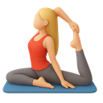

Viva Pilates · brainstorm de ecos
O mesmo eco real (Na mira: braços, com proof de 63%) recebendo cada formato do medidor. As animações de conta-up e preenchimento rodam ao abrir a página; no funil, elas disparam a cada entrada no eco. O burst de partículas + selo aparece só nos ecos que fecham um bloco.
Círculo que preenche com o % no centro — fala a mesma língua do halo circular do herói. Compacto, número grande e âncora visual forte. Mini-segmentos de bloco embaixo dão noção de jornada sem pesar.
Atividade

Essas são regiões que respondem rápido ao Pilates. Agora vamos medir o seu ponto de partida — para você acompanhar o progresso semana a semana.
das usuárias que escolheram os braços ganharam firmeza usando só o peso do próprio corpo.
Seu plano
34% montado
Bloco 2 de 5 · Corpo & medidas
Barra horizontal com gradiente terracota e % grande à direita. O formato mais lido da categoria (apps de fitness e bancos usam). Simples e inequívoco, mas genérico — não conversa com o halo do herói.
Atividade
Essas são regiões que respondem rápido ao Pilates. Agora vamos medir o seu ponto de partida — para você acompanhar o progresso semana a semana.
das usuárias que escolheram os braços ganharam firmeza usando só o peso do próprio corpo.
Bloco 2 de 5 · Corpo & medidas
Stepper com os 5 blocos nomeados: completos com check, atual pulsando, futuros apagados. Dá o mapa inteiro da jornada e prepara o terreno para selos colecionáveis depois — mas é o mais alto e disputa mais atenção.
Atividade
Essas são regiões que respondem rápido ao Pilates. Agora vamos medir o seu ponto de partida — para você acompanhar o progresso semana a semana.
das usuárias que escolheram os braços ganharam firmeza usando só o peso do próprio corpo.
A variante vencedora em modo celebração: fundo dourado suave, anel com brilho, selo "Bloco completo" e partículas discretas nas cores da marca. Aparece ~5 vezes no funil inteiro — uma por bloco. (Exibida aqui sobre a variante A.)
Atividade
Ponto de partida registrado. Daqui a 4 semanas, é esse número que vai contar a sua evolução.
das usuárias que registram as medidas no início concluem o primeiro mês do programa.
Seu plano
40% montado
Bloco 3 de 5 · Rotina